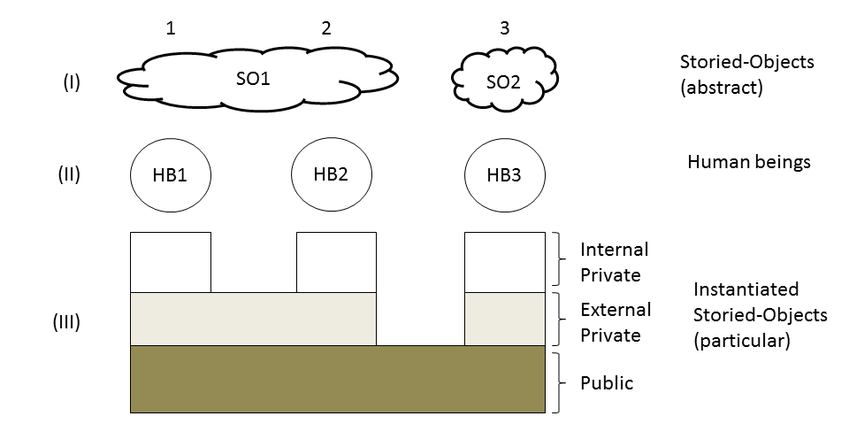
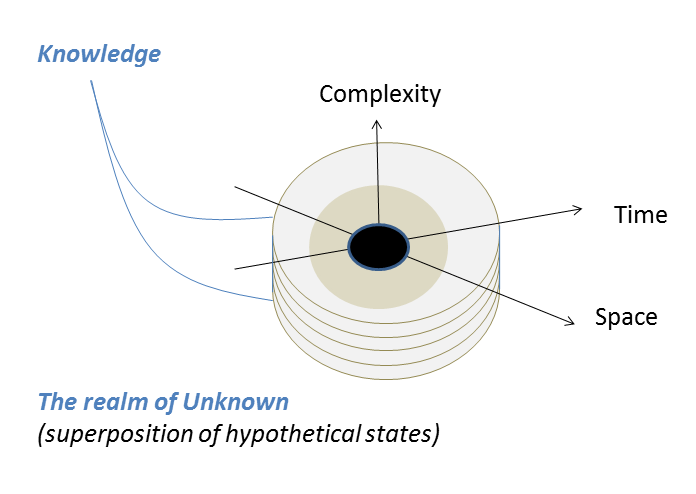

3.2 Instantiated Storied-Object (ISO) Machinery
According to our definition of the real entity, if we can design a logically cohesive description of something and then
provide reproducible practices delivering features characteristic of that something then whatever we have designed it
must be real. We have a schema telling us how to create and maintain new real entities:
- Design a logically cohesive description of that entity
-
Implement that design through practice
-
Test and maintain the implemented instance
The first step (Design) provides a general description of the entity to be created including outline of features
characteristic of it, and specification of reproducible practices one must follow in order to recover these features.
This step may also involve research and review of earlier developments relevant to the subject matter. Implementation
step instantiates that design by following procedures which are meant to recover features characteristic of it. Finally,
the 3rd step is to check that particular instance and either evolve it through time or just maintain it in a certain
state. The operation and maintenance manual must be available from the 1st step.
Let me introduce new terms here we will be using through the rest of this manuscript. We shall call a logically cohesive
description of an entity – a Storied-Object (SO). The notion of the storied object generalises the notion of the
storied-world in a sense that there are many storied objects and some of them are storied-worlds. The outcome of the
second step (implementation) we shall call an Instantiated Storied-Object (ISO). Having these new terms established, we
can rephrase our instantiation schema.
To create and maintain a new real entity, one has to accomplish the following tasks:
- Design a storied-object
-
Instantiate a storied-object
-
Test and maintain an instantiated storied-object
In what follows I shall call this schema (Design, Instantiate and Maintain) Instantiated Storied Objects (ISO)
machinery. Through the ISO machinery we can design and instantiate physical devices, social constructs and even
metaphysical entities. The strategy is always the same – provide a quasi-coherent description of an object, identify key
features to be delivered, and implement reproducible practices to see whether the promised deliverables are indeed
delivered. As an example, consider the notion of family - there is a description of that entity, including the roles
played by the members of the family. By enacting these roles people instantiate the corresponding storied-object – the
family. Another example provides martial arts integrating practices with elaborate teachings about the human nature.
Consider also religious practices or scientific experiments, where again we have very tight linkages between theory and
practices and specific outcomes expected from these practices.
Epistemological turn (Generalised ISO machinery)
The ISO machinery explains how we create conventional artificial objects such as physical aggregates and social
constructs. Design, implement and maintain – people have been using this simple schema for thousands of years to build
bridges, machines, cities, polices, legislation, customs etc. Unfortunately, this schema does not apply to natural
systems. Stars, ocean, mountains, laws of the nature - all these items seem to exist by themselves independent of our
wishes, people neither design nor instantiate them. It looks like there is a considerable difference between natural and
artificial systems. Should we care about this difference? Does it matter to our project of creating new artificial
worlds?
I think, it does. We can, of course, cut out natural systems and focus only on psychological, ethical or metaphysical
domains, arguing that they represent the most impart parts of our lives,
and we don’t really care about the motion of particles, but
we do care about the meaning of life, love, beauty, goodness etc. We develop new artificial worlds by shuffling these
notions and leaving aside natural systems, and we call these new worlds real because they are not just fiction worlds we
have invented to amuse ourselves and others. However, whatever label we attach to them and whichever class they belong
to (and in fact we can allocate them to any class we wish and name this class whatever we like), unless we have a schema
applicable across both natural and artificial domains and explaining how we can create new stars and galaxies in the
same way as we can assemble new lawn mowers, we will always feel that artificial systems, particularly
those based on social
conventions, are somewhat inferior (less real) than natural systems. This doubt will spill over and
contaminate all our subsequent
talks about virtues, the human nature, the afterlife, gods etcetera.
Anything beyond the realm of natural systems will
be considered as less reliable, perhaps, even deficient version of being, because it does not exist by itself but was
created by us and is maintained by us.
If we are serious about creating new artificial worlds, we need to generalise the ISO machinery and make it applicable
across both natural and artificial domains. To this end, in the next section we introduce further assumptions concerning
the structure and functioning of the ISO machinery.
The structure of ISO machinery
To begin with, we shall assume a metaphysics underpinning the ISO machinery is made out of three levels of ontologically
distinct realms. These levels are illustrated in figure 3.1 where:
(i) The top level represents the realm of abstract entities populated by storied-objects. All stories (told and untold)
by any author and of any type (including proven and yet to be proved math theories and laws of science) reside in this
realm. We have discussed a few examples of such stories in chapter 1 when discussing storied-worlds. Apart from
storied-worlds there are many other storied-objects populating these worlds and we definitely do not know all of them.
(ii) The second level comprises human beings which are meant to instantiate particular storied-objects out of their
abstract counterparts. A human being is considered neither abstract nor particular. S/he represents a special class of
ontologically distinct entity called a human being. To avoid multiverse identity paradoxes, we assume further that each
person has an essence defining his identity and associated with a specific storied-world.
(iii) Finally, the third level comprises the realm of particulars – instantiated storied-objects. Particulars are
grouped into three classes – entities binding to all people, entities binding to a community, and private entities.

Figure 3.1. Schematic representation of the ontology underpinning ISO machinery
Private entities (figure 3.1) represent our thoughts, feelings, and other idiosyncratic experiences. Others do not have
immediate access to these experiences, but we can communicate them via particulars shared either within a community or
by all people.
Entities shared in a group represent conventional social constructs such as customs, legislation, religious beliefs etc.
There are typically well established and agreed upon practices underpinning the development and maintenance of these
kind of entities and when we say people instantiate (create) these entities, it does not sound like a controversial
statement. Members of the community may need to have a proper education or training to be able to reveal features
characteristic of these particulars.
Entities shared by all people. This class represents natural systems and laws of physics. These entities are typically
considered to exist out there in the nature to be discovered by a human being rather than being instantiated by him.
Except some extreme cases (e.g. science experiments), people are hardwired with the capacity to perceive these systems
and do not require any special education or training to make an observation.
We are aware of the existence of particulars through observations, or measurements, or some other organised practices
delivering empirical evidence of such entities. This evidence could be universal and shared by all people just because
it happens that we all share same basic bio-physical and psychological features. For example, you don’t have to have a
special education or training to be able to see an apple, or enjoy its taste, or feel its texture. Other empirical
evidence is tailored to particular communities of people who must have a proper education or training to be able to
follow instructions and produce certain outcomes, be it a psychological state, a certain character type, an
interpretation of the good life, or a track of the particle on the film. You need to have a proper education in order to
conduct a science experiment and understand the results of this experiment. Analogously, you need to have a proper
education and training in order to practice and experience features specific to a particular culture or a teaching.
There is an infinite number of storied-objects out there in the abstract realm of stories and we find new stories
through the process of creative writing. The question of whether we really create something new which never existed
before, or just discover something which already exists out there in the realm of abstract entities, I think, does not
matter. It is just a matter of taste to stick with one or another interpretation.
We can create stories which make no sense at all. We can also tell stories which might be logically cohesive but do not
have instructions for us to follow and, hence, no empirical evidence and no place for practices. From the ISO
perspective all these stories are dead scripts. We can neither believe nor use them to underpin a storied-object. We
shall leave these stories aside and focus only on those which have both a reasonable description promising certain
results and reproducible practices proving these descriptions true.
According to the ISO machinery, a human being is special – s/he is capable of instantiating particulars out of their
abstract counterparts. By following user-manual we can assemble a bicycle. By enacting a play-script, we can instantiate
a character type of the samurai. Drawing on the analogy with the object-oriented programming, we can think of a
storied-object as a class, and a human being instantiating a member of that class by following certain predefined
procedures.
All this is fine, but we still don’t know how to instantiate natural systems. Figure 3.1 explains how to create
artificial objects but says nothing about instantiation of natural entities. To address this issue, we introduce further
assumptions concerning the nature of our knowledge and the cycling between abstract and particular realms. Namely, we
assume that acquiring new knowledge through observation is equivalent to instantiating a particular entity out of its
abstract counterpart (i.e. storied-object), and vice versa, whenever all the knowledge about a particular entity is
deleted completely from the collective memory of all human kind, this entity transforms back into the abstract form. The
next section explains this assumption in more details.
The functioning of the ISO machinery
In this section we take an epistemological stance and instead of talking directly about storied objects, we will discuss
our knowledge about them. The line between the ontology and epistemology talks, I think, is very slim. We may take that
only knowledge matters and the ontology talk is just another way of expressing that knowledge. Or we may insist that
ontology comes first, and the knowledge builds on top of it. I think, either of these interpretations will do the job.
The language of the epistemology, however, for a number of reasons seems to be better suited for extending the ISO
machinery towards the natural systems.
Epistemological view allows us to build on the normative component of the definition of knowledge to produce new
interesting interpretations of storied-objects. For example, we can reverse the ordering of the cause and effect
relations and instead of saying that we have empirical knowledge (i.e. the knowledge based on observations) of only
those things which exist, claim that only those things exist that we know about. The knowledge comes first, the
existential status follows. Conversely, if we (all people) do not have empirical knowledge of something, then that
something does not exist in a particular form. Furthermore, if the knowledge of the particular entity is lost completely
(so that no one in the whole world has this knowledge) then the corresponding entity transforms from the particular form
into the abstract form. Terms “we” and “us” here refer to all people considered a collective entity rather than to
separate individuals.
Acquiring a new knowledge now amounts to instantiating a new entity, and vice versa, deleting this knowledge transform
particular entity into the abstract state. The loop between abstract and particular domains is now closed and we have a
cycling of items between these two realms facilitated by people.
From this epistemological perspective any unobserved and hence unknown (to all people collectively) natural object does
not exist in a particular form. Instead this object exists in the form of a superposition of abstract hypothetical
states. By following certain procedures (called an observation, or measurement etc.), we can instantiate one of these
abstract hypothetical states turning an abstract entity into a particular object. Observing a new planet now becomes
analogous to assembling a new lawn mower – we follow observational procedure (or follow the user manual) and discover
the planet (or get the lawn mower). The reader may think, there is still a fundamental difference between us randomly
discovering the planet (we don’t know upfront whether we find it or not) and us purposefully assembling the lawn mower
(we know the result before finishing the job), but there is not. It is just a matter of us having more prior knowledge
(narrowing the range of hypotheses) for lawn mowers as compared to prior knowledge we may have about the planet (we
shall discuss this in more details later).
The behaviour and parameters of this planet will be consistent with the established laws of nature, because these laws
have been instantiated earlier, and for a new observation to be consistent with the established body of knowledge (one
of constrains imposed on real objects by our definition) it must obey established laws of nature. This instantiated
planet exists as long as anyone in the world is aware of its existence or until there is a circumstantial evidence which
proves it. However, as soon as this knowledge is deleted completely, so that no one in the world is aware of it, then
this planet transforms back into a superpositional state. Next time, another observer may find a star instead of the
planet on the same spot and no one would be able to claim a contradiction, because all the knowledge about the planet is
gone.
Note that this vision does not interfere with science simply because science does not care about metaphysical origins of
natural objects - it works with the established nature. This vision can also be refined to avoid logical contradictions
and we shall attend to this issue later.
Why do we care introducing this interpretation?
The goal is to raise profile for socially constructed entities such as virtues, customs, human nature, gods, afterlife
etcetera (Kind of. In fact, instead of upgrading social constructs we downgrade the status of natural objects making
them dependent on us and thus analogous to social constructs). Since the cycling of natural and artificial systems
across abstract and particular domains is governed by the same principles, now it makes sense to call all them real. The
rest of this chapter elaborates further this vision
The knowledge ball (k-ball)
To illustrate this epistemological approach and highlight features characteristic of it, let me introduce the knowledge
ball (k-ball). The k-ball represents all knowledge about instantiated world accumulated and maintained collectively by
all humanity right now (see figure 3.2). This knowledge builds on top of empirical evidence and is distinct from the
knowledge of abstract forms. Analogous to previous section we discriminate between three classes of this knowledge – the
knowledge shared by all people (dark area in figure 3.2), the knowledge shared by communities (grey area), and private
knowledge (encircled white area). Beyond the k-ball lies the realm of abstract entities including storied-objects
representing hypothetical states of the system.

Fig 3.2 The knowledge ball (k-ball)
It is easy to see that the knowledge-ball is just a different representation of the schema shown in fig 3.1. By rotating
individual columns in schema 3.1 and stacking them on top of each other we transform figure 3.1 into 3.2. As already
mentioned, the main reason for introducing this new representation is a certain advantage it offers in illustrating
features specific to our knowledge.
The k-ball is a dynamic entity evolving through time. New objects are instantiated out of abstract entities and the
corresponding knowledge is accumulated and integrated into the body of the established knowledge - the k-ball becomes
bigger. On the other hand, the established knowledge, unless reinforced on a regular basis, is eroded and eventually is
lost completely. When the knowledge is lost, the corresponding object turns into the state of superposition of abstract
entities. When the knowledge disappears from the inside of the ball, the k-ball becomes porous, meaning that certain
knowledge, which is used to be justified, is not anymore, but we may still count it as knowledge (Berger calls this
process the sedimentation of knowledge).
A helpful analogy of the k-ball provides a termite’s mound. The mound is produced by the collective effort of the whole
community of termites. Every individual termite makes its own contribution by adding new structured material to the
mound. Once the new patch is added it stays and its existence is acknowledged by others. The mound grows. On the other
hand, because of the weathering effects, the structure is permanently eroded and eventually existing features are turned
into the formless dust which is washed away. And, of course, as any analogy this one is not perfect. For one thing, our
empirical evidence often represents evolving, changing systems rather than static entities. Another point to make here
is that we should not invest too much into the image of the mound as being out there in the nature. It might be
convenient to think of our collective knowledge as representing an entity which exists by itself, separate from our
knowledge of it, but equally we may think of it as just a total sum of our individual knowledge plus some processing
utility overarching individual contributions and integrating them into the functional whole.
Our knowledge is almost never perfect, and a certain degree of uncertainty is always inherent to it. The knowledge ball
is centred at the present - we can predict neither the distant future nor the distant past of the universe because all
our empirical knowledge is based on induction which cannot be trusted (especially when it comes to long-term
predictions). Analogous to time scale, our knowledge is allocated spatially within a relatively narrow range of scales
centred on items we can observe with a naked eye. We have little understanding of what happens on the extremely large
and extremely small spatial scales and one of the reasons for that is again the lack of empirical evidence in these
domains. Furthermore, most of the evidence we have pertain to the world of simple phenomena. We have little
understanding of complex systems and no single description of them. Further away we go from the centre of the k-ball,
the higher uncertainty of our knowledge, the more abstract and hypothetical it becomes.
Instantiation of physics
The ordering constraint – the first instance rules
According to the ISO machinery anything we can see, hear, touch, smell, taste, all the oceans, the mountains, and the
stars must be brought into existence through us enacting certain practices called observations or measurements. The
outcome of these practices is an instance of the corresponding storied-object. We must be able to instantiate these
objects sequentially in time, one by one, and once instantiated they must stay adding to the bulk of the
socially-produced empirical evidence (analogous to patches of dirt added by individual termites to the mound). Let’s see
how we can do it.
First of all, to avoid contradictions between different instances by different people, we need to keep track of the
history of these objects, so that new instances do not overlap with those established earlier. For example, if I
discovered a star somewhere in the universe for the first time, another person, not aware of my discovery, must not
instantiate the black hole at the same spot later (an implicit assumption here it was a young star billion years away
from collapsing into the black hole). The pool of the empirical evidence produced by the community of all people must be
kept in a self-consistent form (or close to that). To accomplish this task, we introduce the ordering constraint which
states that the first instance rules.
Let me explain it. If I have instantiated a star in the sky, later observers must not be able to instantiate any other
object on that spot (unless, of course, all the knowledge about that start has been deleted completely). If another
observer later manages to change the colour of that star from red to blue (using some magic paint), and I’m not aware of
that change and believe the star is still red, then my belief is false. If this another observer dies in a car crash,
and no one knows about him changing the colour of the star, then my belief of the red star becomes valid again. If I die
and no one knows about my discovery of the star, then that star transforms back into an abstract superpositional state
of hypothetical entities and the next observer may find a black hole instead of the star at that same place.
Now, to make it clear, when observing a star for the first time, I’m instantiating not only a snapshot of that star but
also the near future and the past states of that star – a 4 dimensional space-time continuum centred at the present and
stretched into the future and into the past - the reason why the later observers cannot instantiate another object at
that spot. To illustrate a 4D evolving nature of the instantiated objects, consider another example, a planet orbiting
around the star. We have observed it yesterday at the spot A. Another observer finds it today at another spot B.
According to the ordering constraint, even though no one in the past has ever made an observation at the spot B, and the
new observer makes the very first observation at that location, he is still bound to find our planet at that location,
because otherwise his new observation at B would contradict our earlier observation at A. In other words, there are
cause and effect relations governed by the laws of physics and operating across the whole universe. Because of these
relations, the ordering constraint must acknowledge correlations between spatially and temporally distant events. The
current state of a particular space volume could be conditioned by the past events which have happened elsewhere.
The role of the cause-effect conditioning, however, must not be overestimated since there are inherently chaotic systems
in the nature breaking cause and effect linkages and making accurate prediction of the distant future of the universe
almost impossible to achieve (thus eroding the grips of the ordering constraint). We still don’t know, for example, what
is inside a box until we open it and instantiate an initial state via an observation. A number of hypothetical initial
states exist, only one instantiates - initial conditions are contingent.
Laws of nature
Unlike initial conditions, the laws of the nature seem to be predefined and valid uniformly across the whole universe.
Whatever natural object we instantiate, it follows the same laws. You might be completely ignorant of physics, for
example, and be the first person to discover a planet at some distant location in the universe, but whatever the
location of that planet its motion will be governed by the laws of physics and the gravitational pull between this
planet and its star will be inverse proportional to the squared distance between these bodies. Why we never instantiate
solar systems where the gravitational pool is inverse proportional to the linear distance between the objects rather than the
squared distance?
From the ISO perspective it would make sense for us from time to time to discover (instantiate) solar systems with the
altered laws of physics (analogous to random initial state), but for some reasons we don’t. Unlike the location of newly
discovered planets, varying from one place to another, the same laws of physics seem to apply across the whole universe.
The best explanation of this phenomena, I can think, goes as follows. We may live in the universe with either
homogeneous space and time or not uniform, heterogeneous space and time. In the homogeneous universe laws of the nature
hold across space and time, and vice versa, in a heterogeneous universe the laws of the nature change with time and
across the space. We know there are laws of the nature invariant across space and time and there is a long record of
observations to support this statement. We can take these observations as proving the homogeneous nature of the universe
(at least, with regard to this specific set of laws). In this case, it seems reasonable to expect for a new observation
to be consistent with the established set of laws. For example, if we had 1000 observations of different planets, each
consistent with the inverse squared distance rule, then based on the induction we shall expect the same rule to apply to
a new planet. Previous observations have narrowed down the range of our hypotheses to a very specific outcome consistent
with the pool of the established knowledge.
What about early theories, which do not have big observational support? Let’s see how we may instantiate a new law out
of a bunch of hypotheses. Assume again we have 1000 planets and for each planet we observe the mass, velocity, distance
to the star, location in space, colour, shape, material it is made out etc. We combine these observations in various
sets and test them for each planet to see if there are relationships which stay invariant across all 1000 planets. Every
individual combination represents a hypothetical law to be tested. None, one, or more than one of these hypotheses may
instantiate (i.e. the relationship may hold for all 1000 planets). If none instantiates then we have the universe where
the laws of the gravity vary across the space. If the relationship with the inverse squared distance instantiates then
we live in the world with a uniform distribution of the law of the gravity and it obeys the inverse squared distance
rule. Conversely if the relationship with the inverse linear distance instantiates – we we live in the universe with
this particular law. Whatever the outcome of these experiments, this outcome again collapses the range of hypotheses to
a specific one, and a new observation of the new planet then follows pattern established earlier because we have a
record which proves it via induction (kind of). Consistent with the ISO machinery, the origin of the law is contingent,
but once instantiated, it holds across time and space and applies to all other observations.
To summarise, for us to instantiate a new planet at a particular spot in the distant galaxy (i.e. to be able to discover
this planet via observation), the folowing requirements must be satisfied:
- no one must be aware of another object occupying the same spot.
-
no one must be aware of the nearby objects which may move and occupy that spot during the observation time.
-
the new planet must conform established laws of physics and has the right mass, velocity and location.
Why this particular set of laws, rather than another?
Well … perhaps, we live in a multiverse and there are other universes where other rules have been instantiated, but it
just happened that in this particular universe these specific rules have been established.
Reconciling different futures of the Earth
Let’s see how we can use the ISO machinery to reconcile contradictory statements concerning objects shared by all people
(e.g. the planet Earth) without claiming one of these false? Say, we have two communities, one believes in A (the planet
Earth will have triangular shape in the future) and another believes in B (the planet Earth will have a square shape in
the future). Can we reconcile A and B?
One possible solution to this problem is as follows. Isolate these communities and make sure they forget each other.
Say, move community “A” to the North Pole and community “B” to the South Pole. The future of the community “A” is given
by statement A and the future of the community “B” is given by statement B. “A” think they live alone on the planet. “B”
think they live alone on the planet. Neither of these communities has any evidence of the existence of the other
community on the other side of the planet. The other side of the planet from the “A”s perspective exists in a
superpositional state comprising a bunch of hypothesis. Analogously the North Pole from the “B”s perspective exists in a
superpositional state. According to the multiverse theory, eventually these two communities may find themselves as
living on two different planets. From the “A”s perspective this is consistent with their knowledge. From the “B”s
perspective this is also consistent with their knowledge. The only contradiction we may still have in this system is
that from the perspective of the external observer who observes these two tribes. To make it clean, we will have to move
this observer away. In other words, there must be no one available such that he or she could enter a court room and
prove a contradiction arising from the claim that there are two tribes on two different planets having different future
for the same planets. Once we reached the stage where no one can prove that contradiction exists,
we can have two real and
different planets in the future originated from the same single planet in the past (we can also interpret the external
observer as a special kind of entity which does not instantiate and, therefore, has a capacity to observe objects in a
superpositional state. Since he does not instantiate, he cannot communicate and cannot witness in the court).
Once again, we had to split and isolate communities (A and B) in order to produce a continuous transition from a single
planet of the present to two different planets of the future without introducing a contradiction (e.g. when people from
different worlds point to the same previously-shared but now duplicated and separated objects and claim different
truths).
We may speculate that such divergence of the worlds could have been common phenomena in early history of
the human kind, when isolated tribes of people developed and maintained their own interpretations of the world. According to the
multiverse story they could have generated many different universes, some of these still running in parallel with ours.
Nowadays, however, this example bearing on isolated communities is of a limited use in practice. Members of
heterogeneous communities today believe in different futures and share these beliefs across different communities. Under
such conditions eventually they instantiate the future which acknowledges the existence of alternative belief systems.
To make two contradictory beliefs simultaneously true in such world, we must handle somehow the fact that we share this
planet with others who may believe in another future. Can we reconcile these beliefs without isolating the respective
knowledge bases?
It turns out that for a mixed community this goal is much more difficult to achieve. It is not a trivial task to develop
a self-consistent story that would let us to duplicate and isolate material worlds without introducing contradictions.
Despite these difficulties, I believe, smart people might be able to tighten up loose ends and produce plausible
theories about instantiation based on different assumptions about the nature of the human beings, the structure of
storied-worlds etc. However, the next question they will face will be about the value of such stories - do we really
want people to have a capacity to duplicate and isolate material worlds to make sure whatever they say is true? I am not
sure in this. Anyway, this manuscript is about building a plausible description of the multiverse, one out of many other
possible descriptions. The description I have chosen builds on an assumption that in a heterogeneous community we cannot
duplicate planets and isolate them in parallel worlds – if two stories predict contradictory futures for the planet
Earth, at least one of these stories must be false.
Reconciling different histories of the Earth
History is a story we tell about the past consistent with our current knowledge. The same knowledge base may underpin
different stories. Furthermore, in different cultures different beliefs count as knowledge, subsequently people may have
different knowledge bases underpinning different histories. Having two equally valid histories about a particular object
shared by all people (e.g. the planet Earth) introduces a genuine contradiction which can be resolved
by either claiming one
of these false and another true, or by isolated the knowledge base of the respective communities.
According to the ISO machinery, histories evolve through time. When new evidence is discovered, the history is adjusted
appropriately – the original history disintegrates into the abstract form and new history instantiates. For example,
before Australia was discovered by Europeans, Australian aboriginals and Europeans lived isolated from each other. For
Europeans Australia existed in a superpositional state comprising different hypothetical states and there was no history
of Aboriginals. For Aboriginals the Europe existed in a superpositional state and there was no history of Europeans.
Either of these beliefs was true until Australia was discovered, and new history has instantiated.
ISO machinery offers a peculiar interpretation of the history of the universe before the first humans. According to ISO,
this history did not exist before humans, but was created later through the instantiation. The history is not immutable
and (in some cases) can be altered.
What is up to us to reconcile?
To carry out the ISO rendering of the universe, we must take care the ISO machinery does not interfere with the laws of
physics. Consider the way we may instantiate some social constructs, a character type, for example (e.g. being an
atheist, or a Buddhist, or a samurai). It is up to us to decide what kind of the future to pursue or what kind of a
person (i.e. Buddhist or atheist) to become. If we know the state we would like to achieve, there are
instructions (practices) we can follow to reach the destination point. If I practice Buddhism, there are chances I will
become a Buddhist (and, hence, I will reincarnate and will have the future and the past of the Buddhist, and my current
belief in that future and the past will be consistent with all evidence I have). It looks like it is up to me to choose
practicing Buddhism and becoming a Buddhist.
What about the nature, the world of particles? Is it up to us to decide the future of the physical objects? For example,
the initial state is that I have a spade; the desired state is that I have a tractor, and another possible future state
is that I have a lawn-mover. There are two recipes (or instructions), one tells how to build a tractor, and another
tells how to build a lawn mower. It is up to me to choose which instruction to follow to instantiate either a tractor or
a lawn mower and with the right instructions and the right set of spare parts there are high chances that I will
succeed. So far, so good. Looks like I can build my own self, choose religious denomination, and create artificial
natural objects at my will.
What about the star in the sky? Say, I have a telescope to observe the star at a particular region of the sky. I am not
sure it will be a red or a blue star, or whether it exists at all at that location. Is it up to me to decide on either
of this? Am I creating the blue star in that region, or I am discovering that star, when I observe it for the first
time?
The way we talk about it encourages us again to think that there are at least two different stories we can tell. One is
the mainstream interpretation of the star as being (or not being) out there in a single real and true world of particles
which is independent of our desires. Another interpretation is based on the ISO machinery. According to this
interpretation, there is some possibility for this star to exist in that region, and this assumption does not contradict
all other evidence we or other people may have. In other words, there is a hypothetical state of that region with no
star, and another hypothetical state of that same region with that star inside. When we carry out measurements for the
first time, we instantiate either one hypothetical state or another. Let’s say that we have instantiated the
hypothetical state where the star exists. The manifold of all possibilities has collapsed into one object and anyone,
anytime in the near future, when measuring at that location, will see that particular star. It is not up to us to decide
upfront whether the star we try to instantiate is there or it is not. It is not up to us to decide whether it will be a
blue star or a red star. Before we observe it for the first time, there are many possibilities, but once we have made
that observation these possibilities collapsed into one. Very much modern physicalist interpretation chiming with that
of the quantum mechanics - until we observe something it exists in a state of a superposition of many different possible
states.
This example seems to be very different from the earlier cases. It seems to be up to us to decide to become a Buddhist
or instantiate a tractor, but it is not up to us to decide on the existence of the star. However, it is easy to see that
the difference between these examples is only apparent. If we look closer on the example with the Buddhist, we will
notice that the confusion arises from the failure to discriminate between our ability to practice Buddhism and our
capacity to actually become a Buddhist. It is up to us to decide whether we practice Buddhism or not, but, it is not up
to us to decide whether we will become a Buddhist or not. Analogously, it is up to us to decide to seek the star in the
sky, but it is not up to us to decide whether we will find it or not. Once we acknowledge the difference between our
ability to plan the future and the capacity to actually make it, we realise that our language of instantiations is
applicable across these two cases – practicing Buddhism and observing the star. It is up to us to design and plan the
future, it is not up to us to actually instantiate our particular design. Good.
What about the case of instantiating the tractor? This situation seems to be very different from that of practicing
Buddhism, or observing the star. We were not sure about outcomes of practicing Buddhism or searching for a star. In the
case of the tractor, if I have the right instructions and the right set of spare parts, I can surely build the tractor.
It is up to me to decide the future.
This example, however, is not legitimate, because it makes us to commit certain assumptions which entail either one or
another outcome of the procedure. When we say, we can build a tractor following the manual, and invoke assumptions that
the manual is correct and we already have the right set of spare parts for the tractor out of which we can assemble it.
We lock ourselves to a particular version of the SW, the SW with a tractor in it. Analogous scenario in the case of
searching for a star would be to assume upfront that all parts of that star are available in that particular region of
the space. Surely, in this case we must observe this star in the sky. We have made too many commitments with our
assumptions, which exclude any other hypothesis as being viable. By insisting on certain empirical evidence upfront, we
drastically reduce an uncertainty of the outcomes. The right way of comparing the scenario with the tractor to that of
the star, is to consider a pile of spare parts, such that we do not know upfront whether they belong to the tractor or
the lawn-mower. We may choose to try the tractor manual, but there is no guarantee that we will succeed. In this
interpretation, the process of instantiating tractor is conceptually similar to the process of instantiating a star in
the sky.
Let me to reiterate it again. The confusion between the aforementioned cases arises from the inaccurate use of words.
We say that it is up to us to decide whether we search for a star or we do not. It is not up to us to decide the
outcomes of the search procedure. Analogously, we say that it is up to us to decide whether we are going to build a
tractor or we are not. But it is not up to us to decide whether we will succeed or we do not. We may fail to build the
tractor for many different reasons. Once we capture this distinction between instructions we choose to follow (the
decision we can control) and the outcomes we achieve (which are beyond our control), the disparate difference between
instantiating stars, tractors, or persons disappears. It is up to us to choose the path, but it is not up to us to
decide where this path will lead us.
Finally, I should say that I am glad it is not up to us to instantiate anything we like. Otherwise, we would end up
locked in the prison of language which is always finite. The whole point of introducing practices was to break this
prison and let novelties in. Otherwise our multiverse would be boring. The freedom to choose which path to follow opens
the whole world of possibilities, and not knowing exactly the destination point makes the whole journey even more
interesting.
Erosion of knowledge
Can we undo the star instantiated earlier? In other worlds, can we reverse and un-instantiate objects created earlier?
Note that the equivalent question applied to the tractor is whether we can undo the fact that we have already built the
tractor? Do not confuse it with the question of whether we can dismantle the tractor? Surely, we can do it, and in
principle we can dismantle both the star and the tractor. But the question we ask is about dismantling the history
itself. Can we undo some event that has happened in the past, so that it did not happen ever?
We can easily devise an interpretation that would allow this to happen. Think of undoing past event as of destroying all
knowledge of that event. Say if we put a cat into the box, and then wipe out all the evidence about that cat and that
action (including all circumstantial evidence which may point to it), then we must consider an option that next time
when we open that box there will be a rabbit inside.
Note also that this theory of an altered past is invincible in a sense that no one can disprove it. The trick is to
insist that we have wiped out all the evidence pointing to the cat. If someone finds a contradiction in us discovering a
rabbit instead of the cat inside the box, we can always defend our theory by arguing that in this particular case not
all evidence has been destroyed. In other words, the fact that you have found a crack in the theory points out that you
have not done a proper work in securing conditions on which this theory builds. And the condition is such that if you
have found the evidence against that theory, then you did not satisfy that condition. He-h.
Defence in court
Let me summarise our interpretation of the process of instantiation of physical objects. The key thesis we build on is
that if there are a number of interpretations (hypotheses) of an entity each being consistent with the current knowledge
and each being more or less logically coherent, then each of these interpretations is a candidate to becoming true
(real). In other words, until these hypotheses are tested, the corresponding entity exists as a superposition of these
hypotheses. Whenever we make an observation and test these hypotheses for the first time (no knowledge claimed by
others), that superposition collapses into a particular instance of that entity (thus producing empirical evidence of
it). An object instantiated by this observation evolves according to the laws of physics which are binding to all
people. If that object has already been discovered earlier and we make a new observation, then we observe an instance
created earlier. The less empirical evidence, the less specific objects we get, and the higher the range of possible
interpretations. When the evidence disappears with time, the corresponding object gradually transforms back into the
superpositional state.
It could be hard to believe that everything we can see is instantiated by people. The mountains, and the seas, and
houses, and the stars and the galaxies. And yet, according to the ISO machinery, there is no contradiction in this
belief. Consider a mountain located at some particular spot which no one has seen before. You could hypothesise that on
that spot could be a big mountain, or a small mountain, or there could just a plain valley, or a lake. Any of these
hypotheses describes a plausible scenario. Once you make an observation and see a particular mountain at that spot, the
manifold of your hypothesis collapses into one option. It may not be exactly the same object as you have expected (e.g.
it could collapse into the instance of the desert, which you just forgot to hypothesise). Once instantiated, it is
lumped to the pool of the empirical evidence that people accumulated throughout the course of their history. The
mountain is locked into the fabric of the shared empirical evidence, and next time when someone else visits that spot
the mountain will be out there (unless, sufficient time has passed and all evidence about the existence of that mountain
has been destroyed).
What if I did not instantiate it by myself, but there was a satellite which took a snap-shot of that place? Can the
satellite instantiate that mountain? If we let machines to instantiate abstract entities, then nothing can stop us
speculating that any instantiated object can in turn instantiate (through the cause and effect relations) other objects.
In the world where machines can instantiate the whole world the role of humans becomes obscure. To make people
important, I will stick with a multiverse where machines have no powers to instantiate objects out of abstract entities.
The satellite can record an image of the surface of the Earth, but it is only when a human being observes that image,
the corresponding particular entity instantiates. I guess, it could make sense to let some smart robots to instantiate
abstract entities in the future, but since we have none of them yet, for a time being I’ll stick with an assumption that
only people can instantiate.
Another way of thinking of instantiated objects is that of defending their existence in the court (i.e. by arguing with
other people and making the point). An object (the mountain) counts as instantiated if there is anyone who could enter
the court room and provide convincing evidence which supports this statement. Otherwise there are chances that the
mountain does not exist.
Instantiation of artificial devices and social constructs
This is easy. People have been using the ISO machinery for thousands of years to build material aggregates and social
constructs. There is nothing new or surprising for us.
Instantiation of metaphysics
The privacy constraint
According to the ISO machinery, everything is made by people, and there must be no fundamental difference between
instantiating a material object or a metaphysical entity. The strategy is always the same – design a plausible story and
figure out reproducible practices delivering features characteristic of that entity. However, unlike natural systems
binding to all people, metaphysical entities are often binding only to groups of people. This binding introduces its own
peculiarities into the functioning of the ISO machinery. Let’s take an afterlife as an example. Consistent with the ISO
machinery, we assume our afterlife is the byproduct of our beliefs and practices. Members of different communities may
have different visions of the afterlife. For example, Bill may believe in heavens for himself and hell for John. John,
however, may have his own perception of his future, which may not be consistent with that of Bill. Having a metaphysical
entity binding to groups of people, introduces a prospect for contradictory claims by members of different groups. How
do we reconcile these contradictions?
Firstly, again, we shall discriminate between our expectations (beliefs) and actual results delivered via practices
associated with these beliefs. Not all promises hardwired into our belief system are necessarily fulfilled. It does not
mean that belief is false, but it may not be true all the time and everywhere.
Second, to resolve this kind of contradictions, I shall introduce a privacy constraint which states that every person is
a master of his own afterlife and others cannot directly interfere with it. Whatever Bill says about the afterlife of
John is irrelevant and only John’s own belief and practices matter. Note that this solution is not unique and we could
have resolved this contradiction by assuming that people can override projections of others, or by letting them to
proliferate identities in the afterlife so that there are two persons called John – one is “John” in his own
storied-world and another is “John” in the storied-world of Bill. However, in this manuscript I will stick with the
simplest solution offered by the privacy constraint, which states that every individual has exclusive rights only to his
own afterlife – the truth is what John believes about his future regardless what others may think of it.
An assumption that people are accountable only for their own beliefs entails certain ramifications and changes to the
established belief systems, particularly those which claim their exceptional rights on the fate of all people (and
almost all of them do). To reconcile these beliefs and integrate them into the multiverse framework, general statements,
spilling across the world boundaries, ideally, must be refined to make them consistent with the multiverse vision. The
scope of all other internal statements must be confined within the teaching itself. On the other hand, in real life, of
course, such amendments are hardly achievable, and a certain degree of inconsistency will always be persist in the
established teachings.
According to the ISO machinery, you can do nothing for people holding wrong beliefs and suffering from the wrongdoing
except trying to convince them to believe and practice the right stuff (right or wrong according to your own perception,
of course). You may not always succeed in this, hence, the tragedy will be inherent to the world of the ISO machinery
(call it, if you like, the world of Sophocles, after the play-writer in ancient Greek who believed tragedy is inherent
to our lives). An alternative to this world would be the world where the well-being of all people is an achievable goal
(the world of Socrates). Unfortunately, I have no idea how to build such happy world and if it is doable at all.
If the afterlife is real, why we do not have strong empirical evidence of it? For example, why no one came back and told
us what the after-life looks like?
Ok, first of all, lets clarify the question. What do we mean by coming back?
According to some teachings (e.g. Buddhism), people reincarnate, understood as a sequence of the chained death and
rebirth cycles of something, which is neither consciousness, nor personality, not the human essence. Coming back in this
context means only a causation of one event by another with little sentiments attached to it. Another interpretation of
this “coming back”, could be some transcendental communication channels established across the worlds and accessible by
special people (e.g. shamanic spiritual experiences, liturgy in Christianity, meditative experiences in Buddhism).
Finally, we may think of it literally, in terms of the resurrection of one’s body.
The case of the corporal resurrection, I think is reducible to the laws of physics. There are many irreducible processes
in nature, and no corporal resurrection could be one of them. Analogous to the laws of nature, the origin of this rule is
contingent (there could be other universes where people resurrect on a daily basis). It just happened that we live in
such a universe where this rule of no resurrection has been instantiated, and once established it holds across space and
time (analogous to the law of the inverse squared gravity pool between two bodies).
The situation is more involved with other interpretations of the notion of “coming back”. According to the ISO
machinery, experiences by members of certain communities provide empirical evidence of communication with people in
afterlife. One must be properly educated and trained to engage in such communication, but having these requirements
satisfied, the communication is reproducible and consistent with the corresponding teachings. According to the ISO
machinery, the “coming back” (and afterlife) must be a real phenomenon for the members of such community. From this
perspective, there are many established afterlives, and many more can be instantiated in the future. Every person is
responsible for his own afterlife which is conditioned by his own beliefs and practices.
Note that we can treat previous-life analogous to afterlife. Whatever story we can tell about our previous-life
consistent with the logic and empirical evidence is considered a plausible account of it. This story can change through
the lifetime implying different previous-lives being instantiated out of many different abstract possibilities.
Summary
Let’s summarise quickly this chapter. According to the ISO machinery, to create a new real entity one has to design it
first, then implement that design in practice and finally test and maintain it. This strategy applies perfectly well to
conventional artificial entities be it a physical aggregate or a social construct. Unfortunately, it does not apply to
natural systems which seem to exist by themselves often independent of our theories and practices.
To generalise the ISO machinery towards natural systems, we assumed our collective knowledge of such systems to be
equivalent to these systems. If no one in the whole universe knows what is inside a closed box, then its content
exists in a state of a superposition of hypothetical objects which can fit inside. When we open that box for the first
time and look inside, the process of the observation collapses that superpositional state into a single particular
outcome – an object we can observe. The process of the observation instantiates that particular object out of the range
of abstract possibilities. And vice versa, when the knowledge of the particular object is wiped out completely from the
memory of all human kind (including all circumstantial evidence which may point to that object), we assume that object
to transform back into the abstract hypothetical state. This generalised ISO machinery encourages a three-layered
structure of the world comprising the realms of abstract and particular entities and also the realm of human beings
considered neither abstract nor particular.
This generalised ISO machinery applies across natural, social and metaphysical domains. To avoid contradictions when
instantiating natural systems, we introduced the ordering constrain (the first instance rules). Analogously, in
metaphysical domain we introduced the privacy constraint (one is the master of his/her own future)
Why do we care about extending the ISO machinery towards natural systems?
Because otherwise we would always have doubts about the existential status of social constructs and metaphysical
entities - how do we know they are real if they are so different from the natural systems? The generalised ISO
machinery, by offering the same language applicable across different domains, makes it easier for us to believe they are
all of the same kind - social constructs. According to the ISO machinery our customs, morals, feelings, regulations,
gods are as much real as are the mountains and the oceans.
With the ISO machinery in hand, in the next chapter we shall embark on the project of designing and instantiating the
storied multiverse.